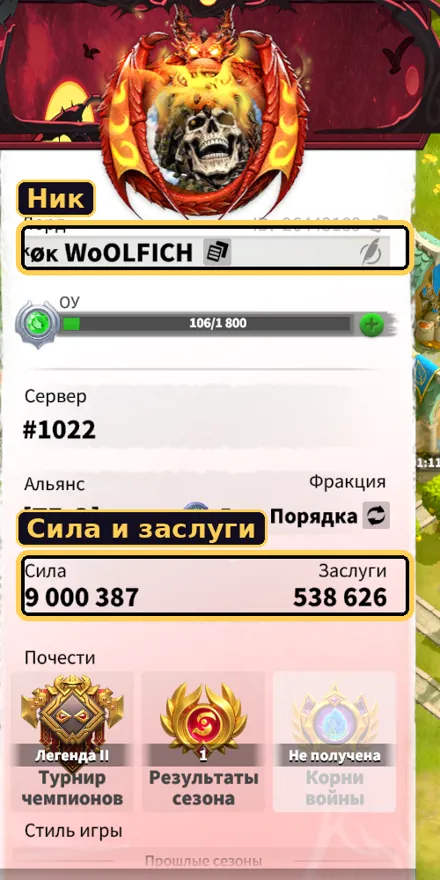
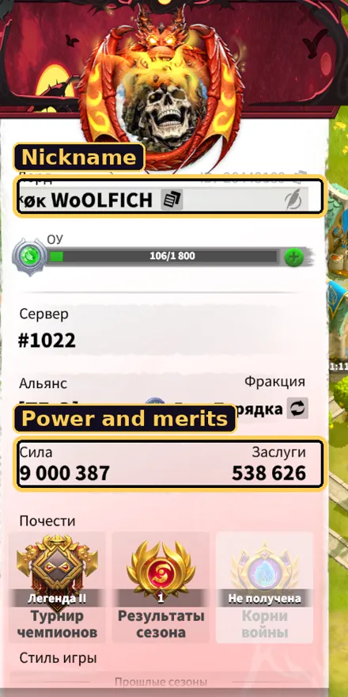
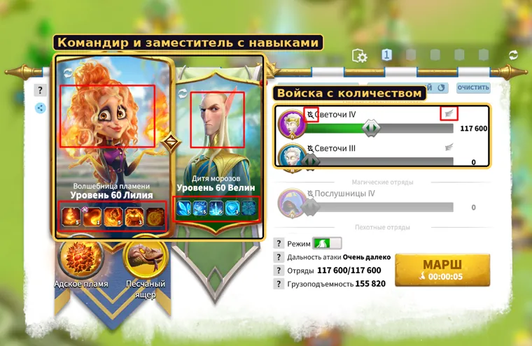
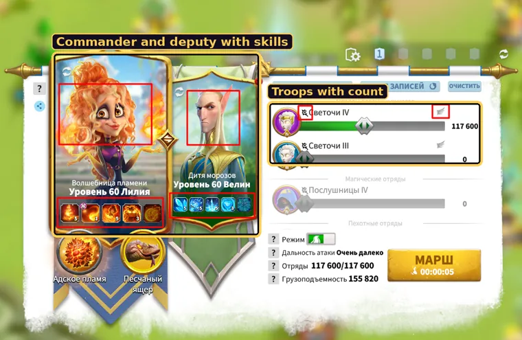

Как заполнить все данные · за 3 минутыHow to fill in all the data · in 3 minutes
1Вступить в альянсJoin the alliance
Получите от офицера ссылку-приглашение и откройте её.
Войдите через Telegram или Google — пароль не нужен. Этот же вход откроет ваш альянс на любом устройстве.
Укажите ник в игре и нажмите Вступить — в списке участников появится ваша карточка.
Get an invite link from an officer and open it.
Sign in with Telegram or Google — no password needed. The same sign-in opens your alliance on any device.
Enter your in-game nickname and press Join — your card appears in the member list.
Альянс доступен и в Telegram: в боте @WOLFICH_COD_BOT кнопка «Альянс» — те же данные, что на сайте.
The alliance is also available in Telegram: the “Alliance” button in @WOLFICH_COD_BOT — the same data as on the site.
2Откройте «Мои данные»Open “My data”
В альянсе нажмите на блок «Мои данные» — он раскроется. Всё, что вы заполните здесь, попадёт в вашу карточку в списке участников.
In the alliance, click the “My data” block — it expands. Everything you fill in here goes to your card in the member list.
3Скриншоты — самый быстрый путьScreenshots — the fastest way
Два скриншота из игры заполнят почти всё сами: профиль — ник, мощь и заслуги; марш — героев, их уровни и навыки, войска.
Two in-game screenshots fill in almost everything: the profile — nickname, power and merits; the march — heroes, their levels and skills, troops.
Выбрать файл
выбрать сохранённый скриншот на компьютере или телефоне
Вставить из буфера
вставить скопированный снимок; на ПК — ещё и Ctrl+V (картинка попадёт в блок под мышью)
Перетащить
можно просто бросить файл на нужный блок
«?» у блока
пример правильного скриншота
Choose file
pick a saved screenshot on your computer or phone
Paste from clipboard
paste a copied screenshot; on PC also Ctrl+V (the image goes to the block under the mouse)
Drag and drop
just drop the file onto the right block
“?” next to the block
an example of a correct screenshot
Какие скриншоты нужныWhich screenshots


Профиль — аватар слева вверху. Видны ник, сила и заслуги.Profile — avatar at the top left. Nickname, power and merits visible.


Марш — «Создать легионы»: командир, заместитель с рядами навыков и войска с количеством.March — “Create legions”: commander, deputy with skill rows and troops with their count.
Язык игры — только русский или английский. Снимок делайте целиком, без обрезки; подходит и ПК, и телефон.
Game language — Russian or English only. Take the full screen, no cropping; PC and phone both work.
Скриншоты распознаются прямо в вашем браузере и никуда не отправляются. После распознавания проверьте поля и поправьте, если что-то прочиталось неверно.
Screenshots are recognized right in your browser and are not sent anywhere. After recognition, check the fields and fix anything that was read wrong.
4Профиль и прайм-таймProfile and prime time
Ник
как в игре — по нему офицеры находят вас и сверяют ранг
Мощь
число целиком, без пробелов и сокращений (не «98,7 М», а 98765432)
Заслуги
тоже целиком, из профиля
Прайм-тайм (UTC) с … до
когда вы обычно в игре, по UTC — как время ивентов. Ниже сайт сам покажет это время по вашим часам. Ночь через полночь тоже можно (например, 21:00–01:00)
В игре, часов в день
сколько примерно вы играете в день — помогает офицерам планировать
Ранг
R4 / R5 ставит офицер или создатель — сами вы его не выбираете
Nick
as in the game — officers find you and match your rank by it
Power
the full number, no spaces or abbreviations (not “98.7 M” but 98765432)
Merits
also in full, from the profile
Prime time (UTC) from … to
when you are usually in the game, in UTC — like event times. Below, the site shows this time in your local clock. Overnight works too (e.g. 21:00–01:00)
Hours in game per day
roughly how much you play per day — helps officers plan
Rank
R4 / R5 is set by an officer or the creator — you don't choose it yourself
Не знаете своё время в UTC? Для Москвы UTC = московское время минус 3 часа. Сайт под полями сразу покажет, как это выглядит по вашим часам.
Don't know your UTC time? Enter it and check the line under the fields — the site shows the same time in your local clock.
5Марши: герои и войскаMarches: heroes and troops
Можно добавить до 5 маршей. Первый — основной, его офицеры видят первым. Скриншот марша заполняет марш, выбранный во вкладках.
You can add up to 5 marches. The first is the main one — officers see it first. A march screenshot fills the march selected in the tabs.
Вкладки маршейMarch tabs
Марш 1Марш 2 — переключение между маршами.
+ Добавить марш — новый марш (до 5).
Удалить марш — удалить выбранный.
March 1March 2 — switch between marches.
+ Add march — a new march (up to 5).
Delete march — delete the selected one.
ГероиHeroes
Командир и заместитель
имя выбирается из списка — подставятся портрет, титул и иконки навыков. В базе все легендарные и эпические герои
ур.
уровень героя (на портрете)
Цифры на иконках
уровень каждого навыка 1–5, 0 — не изучен. Пятая иконка — особый навык (открывается, когда остальные на максимуме)
Commander and deputy
pick the name from the list — the portrait, title and skill icons appear. All legendary and epic heroes are in the database
lv.
hero level (on the portrait)
Numbers on icons
the level of each skill 1–5, 0 — not learned. The fifth icon is the special skill (unlocks when the others are maxed)
ВойскаTroops
Вид войск
пехота, маги, стрелки или кавалерия
Тир
Т1 · Т2 · Т3 · Т4 · Т5 — старший тир марша
Количество
сколько отрядов в марше
Летающие
отметьте, если войска летающие
Troop type
infantry, mages, marksmen or cavalry
Tier
T1 · T2 · T3 · T4 · T5 — the top tier of the march
Count
how many units are in the march
Flying
check it if the troops are flying
6СохранитеSave
Нажмите Сохранить мои данные — появится «Сохранено», карточка в списке обновится у всех.
Press Save my data — “Saved” appears and the card in the list updates for everyone at once.
Обновляйте данные после роста мощи или новой прокачки героев — хватит нового скриншота и «Сохранить».
Update your data after power growth or new hero upgrades — a new screenshot and “Save” is enough.
7Ваша карточка в спискеYour card in the list
Мощь · Заслуги
из профиля
🕒 Прайм-тайм
по UTC и в скобках — по времени того, кто смотрит; рядом — часы в игре в день
RoW 1 · 2 · 3
команда на RoW — назначают офицеры
Ранг R4 / R5
ставят офицеры и создатель
Марш 1 ▾
герои и войска основного марша; «+1» — остальные марши (нажмите, чтобы раскрыть)
Изменить · Пометка · Удалить
кнопки офицеров: поправить карточку, оставить вам пометку, удалить
Power · Merits
from the profile
🕒 Prime time
in UTC and, in brackets, in the viewer's local time; next to it — hours in game per day
RoW 1 · 2 · 3
the RoW team — assigned by officers
Rank R4 / R5
set by officers and the creator
March 1 ▾
heroes and troops of the main march; “+1” — the other marches (click to expand)
Edit · Note · Delete
officer buttons: fix the card, leave you a note, delete
Пометка офицераOfficer's note
Если офицер попросил что-то поправить, в «Моих данных» появится жёлтый блок с его пометкой (а в Telegram — сообщение, если уведомления включены). Исправьте данные и нажмите «Сохранить» — офицер снимет пометку.
If an officer asks you to fix something, a yellow block with the note appears in “My data” (and a Telegram message if notifications are on). Fix the data and press “Save” — the officer will remove the note.
8Фильтры списка участниковMember list filters
Над списком — фильтры по виду войск, команде RoW и прайм-тайму; цифры показывают, сколько участников в каждой группе. Карточки без прайм-тайма попадают в «Не указан» — заполните его, чтобы вас не потеряли.
Above the list there are filters by troop type, RoW team and prime time; the numbers show how many members are in each group. Cards without prime time go to “Not set” — fill it in so you don't get lost.
9Если что-то не такTroubleshooting
Скриншот не распознался
Проверьте, что язык игры русский или английский и снимок не обрезан. Сравните со скриншотом-примером («?» у блока). Если не помогло — заполните поля вручную.
Число прочиталось неверно
Просто исправьте поле перед сохранением. Распознавание подставляет данные, но последнее слово за вами.
Героя нет в списке
Начните вводить имя — список подскажет. Если героя нет в базе, напишите в @WOLFICH_COD_BOT, добавим.
Не вижу своей карточки
Сначала вступите в альянс по ссылке-приглашению и заполните «Мои данные», затем нажмите «Сохранить». Если в списке включены фильтры, сбросьте их («Все»).
Хочу заполнить с телефона
Всё работает и на телефоне: войдите тем же способом (Telegram или Google) или откройте альянс в Telegram-боте.
The screenshot wasn't recognized
Make sure the game language is Russian or English and the screenshot isn't cropped. Compare it with the example (“?” next to the block). If that doesn't help, fill in the fields manually.
A number was read wrong
Just fix the field before saving. Recognition fills the data in, but you have the final say.
The hero is not in the list
Start typing the name — the list will suggest it. If the hero isn't in the database, write to @WOLFICH_COD_BOT and we'll add it.
I can't see my card
First join the alliance with the invite link, fill in “My data” and press “Save”. If filters are on in the list, reset them (“All”).
I want to fill it in on my phone
Everything works on the phone: sign in the same way (Telegram or Google) or open the alliance in the Telegram bot.